Numerical Integration#
Discussion & Definitions#
If we cannot find the exact value to a definite integral and all we need is a close approximation to the integral we can use a numeric technique. There are many functions that do not have an elementary antiderivative. This means that we cannot write the antiderivative of the function in terms of functions we know, for example, polynomials, rational functions, trigonometric functions, logarithms, exponential, hyperbolic functions, etc. For example, \(f(x) = e^{\sin(x)}\), \(f(x) = e^{-x^2}\), and \(f(x) = \sin(\cos(x))\). In these cases, we can approximate the definite integral of the function using a number of different techniques. In addition, computer algebra systems all have their limitations, especially with a process as complex as integration, so evan if the antiderivative is elementary the computer program may not be able to find it. Also along these lines, a computer algebra system may write the antiderivative as a special (non-elementary) function. For example, some will return,
There are numerous numerical techniques for finding definite integrals. If you go further in mathematics and take a course in numerical analysis you will spend a considerable amount of time discussing some of the techniques. In an introductory Calculus sequence we usually look at three methods, Riemann Sums, the Trapezoidal Rule, and Simpson’s Rule. There are many more sophisticated methods that will produce better result and faster. These methods are a good start to investigating numeric integration since they all resemble the Riemann sums we used to calculate the definite integral in the first place and they have reasonable error bounds that make the discussion of uncertainty and interval approximations attainable without more advanced mathematics.
We are not going to derive these formulas nor their error bounds, that can be found in most Calculus textbooks. Here we will go over the methods and use the computer to do our approximations. The difference between these methods is simply what geometric object is being used to do the approximations. For the Riemann sum (Midpoint Rule) we use rectangles, for thee Trapezoidal Rule we use trapezoids, and for Simpson’s Rule we use “rectangles” that have a parabolic top.
Riemann Sums: Midpoint Rule#
In the area approximations section of these tutorials we defined a Riemann sum in general and then later used it to define the definite integral. If you have not read the area approximation section you should do so before continuing. Any Riemann sum (left, right, midpoint, or other) can be used to approximate the integral. The one that is most frequently used is the midpoint approximation, which we call the Midpoint Rule. Recall that the Riemann sum is defined as,
Definition: Riemann Sum
Let \(f(x)\) be defined on a closed interval \([a, b]\) and let \(P\) be a regular partition of \([a, b].\) Let \(\Delta x\) be the width of each subinterval \([x_{i − 1}, x_i]\) and for each \(i\), let \(x_i^*\) be any point in \([x_{i − 1}, x_i]\). A Riemann sum is defined for \(f(x)\) as
For the Midpoint Rule, we let \(x_i^*\) be the midpoint of each of the subintervals.
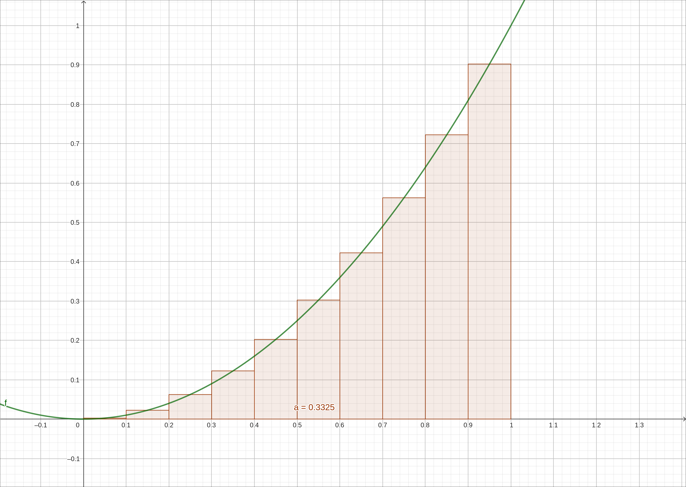
Midpoint Rule Visualization#
In this case \(x_i^* = \bar{x}_i = \frac{x_{i-1} + x_{i}}{2}\), and the area of the rectangles is denoted \(M_n\), specifically,
Definition: Midpoint Rule
Let \(f(x)\) be defined on a closed interval \([a, b]\) and let \(P\) be a regular partition of \([a, b]\) into n segments. Let \(\Delta x\) be the width of each subinterval \([x_{i − 1}, x_i]\), then we define the Midpoint Rule as
where, \(\bar{x}_i = \frac{x_{i-1} + x_{i}}{2}\).
With any approximation there is always some error in that approximation. If you can quantify the error then you not only have an approximation you also know how close the approximation is to the actual value, even though you do not know or can not calculate the actual value.
Theorem: Midpoint Rule Error
The error in the midpoint rule approximation is,
where \(M\) is the maximum value of \(|f''(x)|\) over \([a, b]\). Hence we know,
The Trapezoidal Rule#
For the Trapezoidal Rule, we replace the rectangles with trapezoids. The heights of the two sides are the functional values at those x values. We are simply using straight line segments to follow the curve over the interval we are integrating over and constructing a trapezoid below each line segment.
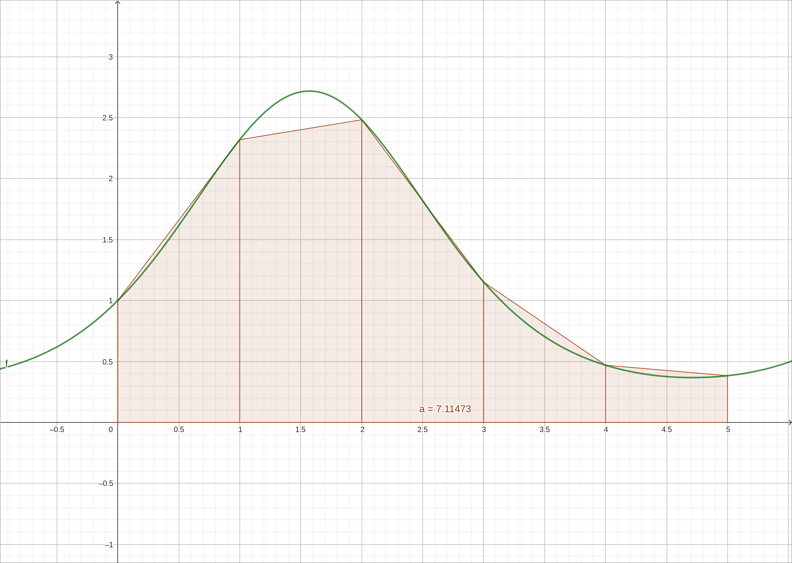
Trapezoidal Rule Visualization#
Definition: Trapezoidal Rule
Let \(f(x)\) be defined on a closed interval \([a, b]\) and let \(P\) be a regular partition of \([a, b]\) into n segments. Let \(\Delta x\) be the width of each subinterval \([x_{i − 1}, x_i]\), then we define the Trapezoidal Rule as
Theorem: Trapezoidal Rule Error
The error in the Trapezoidal Rule approximation is,
where \(M\) is the maximum value of \(|f''(x)|\) over \([a, b]\). Hence we know,
Note
Several notes here.
The Trapezoidal Rule is easy to remember, the first and last functional value we take one copy of and all the inner values multiply by 2. Also remember to use \(\frac{\Delta x}{2}\) as the multiplier.
The Trapezoidal Rule is just the average of the left and right Riemann sums, \(T_n = \frac{1}{2}(L_n + R_n)\). So if you have already calculated \(L_n\) and \(R_n\) for some reason you need not go through the Trapezoidal Rule again, just take the average of \(L_n\) and \(R_n\).
Notice that the error bound for the Trapezoidal Rule is greater than that of the Midpoint Rule, by a factor of two. So even though the Trapezoidal Rule hugs the curve much better the error could be greater.
In the error bounds for this and the midpoint approximation depend on the maximum value of \(|f''(x)|\) over \([a, b]\). This can be challenging to calculate exactly or even to several decimal places. In many cases when this is difficult we will approximate it using the computer or by looking at a graph. We can also overestimate it if necessary but we want to get a number close to this value and not overestimate it too much. You should never underestimate an error bound.
Simpson’s Rule#
In Simpson’s Rule we replace the rectangles and the trapezoids with parabolas. An image of what we are doing is below.
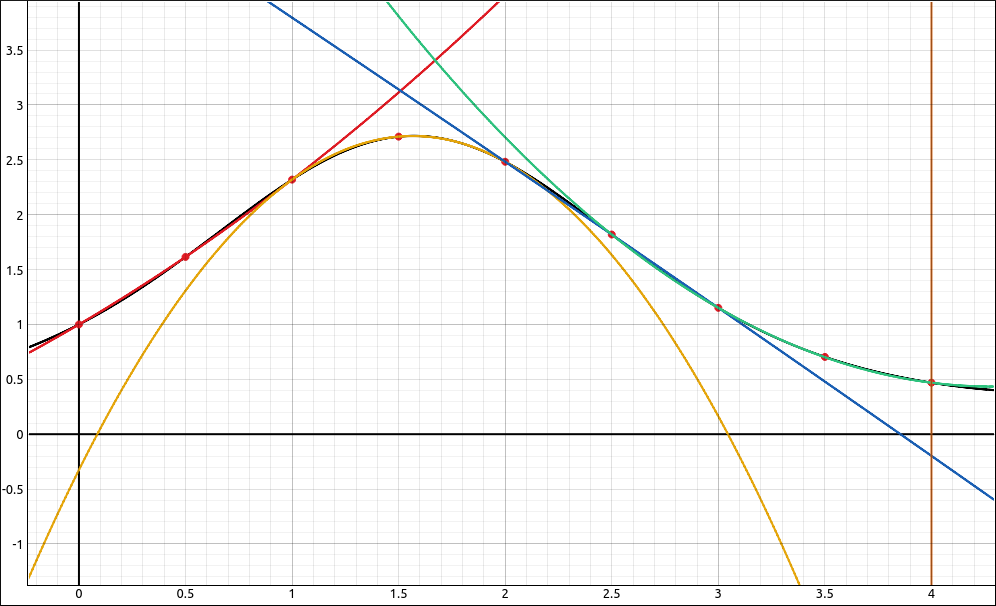
Simpson’s Rule Visualization#
In this example we have the curve \(f(x) = e^{\sin{\left(x \right)}}\) on the interval \([0, 4]\). We divided the interval up into 8 evenly spaced segments \([0, 0.5], [0.5, 1], [1, 1.5], \ldots, [3.5, 4]\). We took the first three points \(\{ (0, f(0)),(0.5, f(0.5)),(1, f(1)) \}\) and drew a parabola through them (thr red line), then we took the points \(\{ (1, f(1)),(1.5, f(1.5)),(1.5, f(2)) \}\) and drew a parabola through them (the orange line), then the next set of three for the blue line, and then the final set of three for the green line.
Then we integrated the red line (a quadratic, so easy) over \([0, 1]\), then the orange line over \([1, 2]\), then the blue line over \([2, 3]\), and finally the green line over \([3, 4]\), and added all these up. So like the The Trapezoidal Rule we took some easy lines (quadratic functions here instead of lines) and integrated then over each segment and then added for a total approximation to the area. The derivation is a little more involved but not difficult, it results in the following.
Definition: Simpson’s Rule
Let \(f(x)\) be defined on a closed interval \([a, b]\) and let \(P\) be a regular partition of \([a, b]\) into n segments (n must be even). Let \(\Delta x\) be the width of each subinterval \([x_{i − 1}, x_i]\), then we define Simpson’s Rule as
Theorem: Simpson’s Rule Error
The error in Simpson’s Rule approximation is,
where \(M\) is the maximum value of \(|f^{(4)}(x)|\) over \([a, b]\). Hence we know,
Note
Several notes here.
The pattern for the multipliers is 1, 4, 2, 4, 2, … 2, 4, 1. That is, for the inner values you alternate 4 and 2 starting and ending with 4.
Simpson’s Rule usually gives better approximations unless the interval is large and n is small.
Simpson’s Rule gives an exact answer for polynomials of degree 3 or less, no matter what the value of n (even \(n = 2\) is fine). This is because for polynomials of degree 3 or less \(|f^{(4)}(x)| = 0\), hence \(E_S = 0\), and there is no error.
Example: \(\int_1^4 2x^3-x^2+5x+1 \; dx\)#
For this example we will compute approximations using our three methods for,
The exact answer is 147.
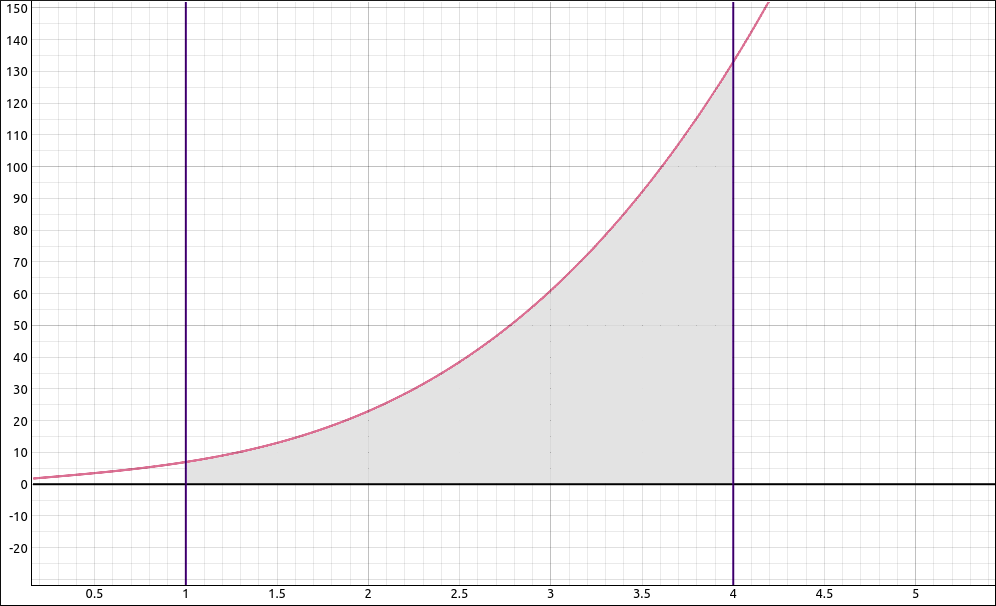
\(f(x) = 2x^3-x^2+5x+1\)#
GeoGebra#
Input the function,
2x^3-x^2+5x+1
Midpoint Rule#
We will calculate and get a visualization for the Midpoint Rule, input the command,
RectangleSum(f,0,1,10,0.5)
The RectangleSum command takes in 5 arguments, the first is the function, then the lower bound for the interval, then the upper bound for the interval, the number of rectangles to use, and finally the position in the interval for the x values. Here we are using 0.5 which designates the midpoint. The left endpoint would be 0, the right endpoint would use a 1. You could also use 0.25 to take the x values 1/4 of the way from the left to right endpoints if you wanted. The image you will get is below and notice that the approximation to the area is 146.658.
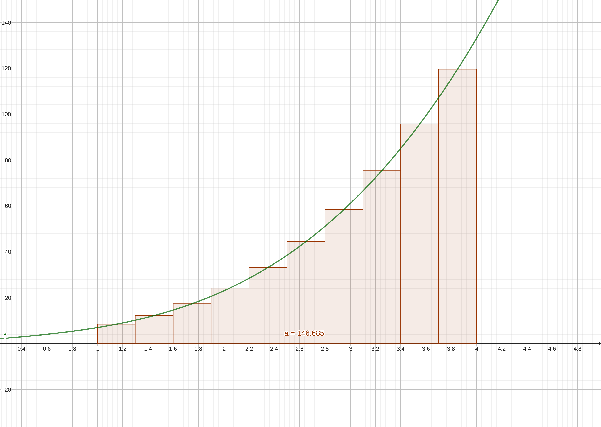
\(f(x) = 2x^3-x^2+5x+1\) with the Midpoint Rule#
If you increase the number of rectangles to 100 you get an approximation of 146.99658, 1000 gives 146.99997, and 10000 gives 147. So with 10000 rectangles we are accurate to 5 decimal places.
To calculate the error we take the second derivative \(12x-2\) and on the interval \([1, 4]\) the maximum value is 46. So the error bound with 10000 rectangles is
Trapezoidal Rule#
For the trapezoidal rule, select a new cell and input
TrapezoidalSum(f,1,4,10)
The TrapezoidalSum command takes in 4 arguments, the first is the function, then the lower bound for the interval, then the upper bound for the interval, and finally the number of trapezoids to use. The image you will get is below and notice that the approximation to the area is 147.63.
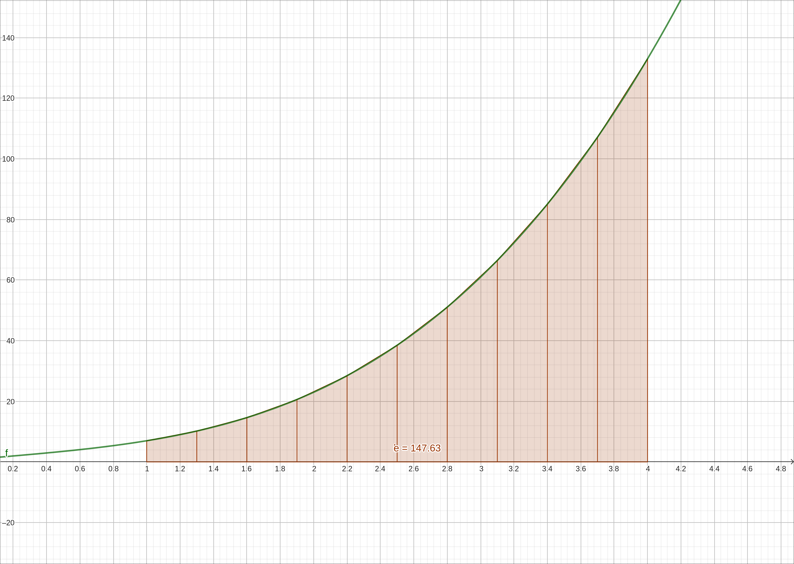
\(f(x) = 2x^3-x^2+5x+1\) with the Trapezoidal Rule#
If you increase the number of trapezoids to 100 you get an approximation of 147.0063, 1000 gives 147.00006, and 10000 gives 147. So with 10000 trapezoids we are accurate to 5 decimal places.
To calculate the error we take the second derivative \(12x-2\) and on the interval \([1, 4]\) the maximum value is 46. So the error bound with 10000 trapezoids is
GeoGebra does not have a built-in function for Simpson’s Rule so we will not do that one here.
You may have noticed that GeoGebra lags a little with 10000 rectangles or trapezoids so we will not push n any higher.
CLAE#
Input the function,
2*x^3-x^2+5*x+1
Graphing this function along with the vertical lines at 1 and 4 gives the following image.
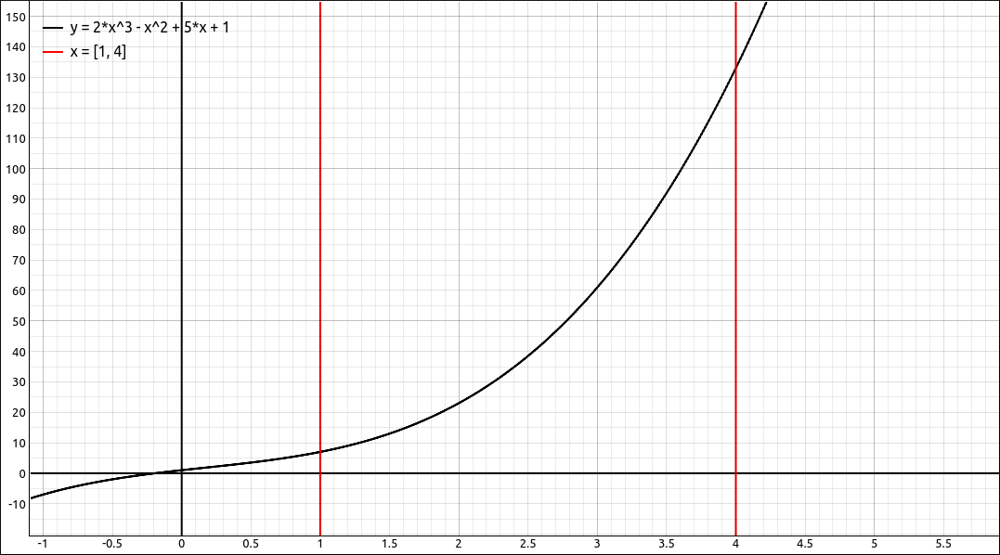
\(f(x) = 2x^3-x^2+5x+1\)#
Midpoint Rule#
For the Midpoint Rule, select the function, then select Calculus > Integral Approximation Techniques > Riemann Sum, the variable is x, lower bound 1, upper bound 4, test position 0.5, and number of divisions 10. The result is 146.68500000000006.
The test point position of 0 designates the left endpoint, for the right endpoint would use a 1 here and the midpoint would use a 0.5 here. You could also use 0.25 to take the x values 1/4 of the way from the left to right endpoints if you wanted.
Rerun the option with 100 divisions to get 146.99684999999997, 1000 divisions gives 146.99996850000002, and 10000 divisions gives 146.99999968499958. We can push this a little further in CLAE, if we try 1,000,000 divisions we get 146.9999999999698, and if we go up to 10,000,000 divisions we get 146.99999999999335.
To calculate the error we take the second derivative \(12x-2\) and on the interval \([1, 4]\) the maximum value is 46. The error bound with 10000 rectangles is
The error bound with 10,000,000 rectangles is
Trapezoidal Rule#
For the trapezoidal rule, select the function, then select Calculus > Integral Approximation Techniques > Trapezoidal Rule, the variable is x, lower bound 1, upper bound 4, and number of divisions 10. The result is 147.63000000000002.
Rerun the option with 100 divisions to get 147.00629999999998, 1000 divisions gives 147.0000630000001, and 10000 divisions gives 147.0000006299996. We can push this a little further in CLAE, if we try 1,000,000 divisions we get 147.00000000005406.
To calculate the error we take the second derivative \(12x-2\) and on the interval \([1, 4]\) the maximum value is 46. The error bound with 10000 rectangles is
Simpson’s Rule#
For Simpson’s rule, select the function, then select Calculus > Integral Approximation Techniques > Simpson's Rule, the variable is x, lower bound 1, upper bound 4, and number of divisions 10. The result is 147.00000000000003. Now you may be saying, wait a minute, the theory says that Simpson’s rule gives an exact answer for polynomials of degree 3 or less, why did we not get exactly 147? Simple answer, round-off error in the calculation. If we rerun this with 2 divisions we would get 147.0000000. To calculate the error we take the fourth derivative \(0\), hence the error is 0.
Definite Integral Approximation#
CLAE also offers a more sophisticated approximation method that uses a different algorithm than the ones above. Select the function and then select Calculus > Definite Integral Approximation, variable is x, lower bound of 1 and upper bound of 4, the result will be 147.000000000000 and it was quicker than 1,000,000 rectangles.
Maxima#
Maxima does not have built-in methods for the Midpoint Rule, the Trapezoidal Rule, or Simpson’s Rule. We can fairly easily write functions to do so. We do not want to get side-tracked into programming in Maxima but you should be able to follow the code and what it is doing. If the Simpson’s Rule block looks unfamiliar you might want to look over the derivation of the rule, it will become clearer at that point.
All three functions take the same arguments, the first is the name of the function you are approximating the integral of, the second is the lower bound, the third is the upper bound, and the last is the number of divisions.
First define the function,
kill(all);
f(x):=2*x^3-x^2+5*x+1
Midpoint Rule#
Load the following function,
mid_sum(RSfct,lb,ub,n):=block([dx,s,xp,a],local(RSfct,lb,ub,n,dx,s,xp,a),
dx:(ub-lb)/n,
xp:lb+i*dx - dx/2,
s:sum(RSfct(xp),i,1,n),
a:float(s*dx), numer,
a)$
Now we will use it for 10 rectangles, run,
mid_sum(f, 1, 4, 10)
We get 146.685. Now run the function on higher numbers of rectangles.
mid_sum(f, 1, 4, 100);
mid_sum(f, 1, 4, 1000);
mid_sum(f, 1, 4, 10000);
You will get 146.99685, 146.9999685, and 146.999999685 respectively.
For the error, find the second derivative,
diff(f(x),x,2);
The result is \(12x-2\) and on the interval \([1, 4]\) the maximum value is 46. The error bound with 10000 rectangles is
Trapezoidal Rule#
Load the following function,
trap_sum(RSfct,lb,ub,n):=block([dx,s,xp,nxp,a],local(RSfct,lb,ub,n,dx,s,xp,nxp,a),
dx:(ub-lb)/n,
xp:lb+(i-1)*dx,
nxp:lb+i*dx,
s:sum(RSfct(xp)+RSfct(nxp),i,1,n),
a:float(s/2*dx), numer,
a)$
Now we will use it for 10 trapezoids, run,
trap_sum(f, 1, 4, 10)
We get 147.63. Now run the function on higher numbers of trapezoids.
trap_sum(f, 1, 4, 100);
trap_sum(f, 1, 4, 1000);
trap_sum(f, 1, 4, 10000);
You will get 147.0063, 147.000063, and 147.00000063 respectively.
For the error, find the second derivative,
diff(f(x),x,2);
The result is \(12x-2\) and on the interval \([1, 4]\) the maximum value is 46. The error bound with 10000 trapezoids is
Simpson’s Rule#
Load the following function,
simp_sum(RSfct,lb,ub,n):=block([dx,s,xp0,xp1,xp2,a],local(RSfct,lb,ub,n,dx,s,xp0,xp1,xp2,a),
dx:(ub-lb)/n,
xp0:lb+2*i*dx,
xp1:lb+(2*i+1)*dx,
xp2:lb+(2*i+2)*dx,
s:sum((RSfct(xp0)+4*RSfct(xp1)+RSfct(xp2)),i,0,n/2-1),
a:float(s/3*dx), numer,
a)$
Now we will use it for 10 divisions, run,
simp_sum(f, 1, 4, 10)
The result is 147.0. We could have used 2 divisions and gotten the same result. To calculate the error we take the fourth derivative \(0\), hence the error is 0.
Note
With the three functions we created mid_sum, trap_sum, and simp_sum we use RSfct as the input function. With the way these functions are written and the way Maxima handles variables you do not want to define your function that you are taking the sums of to be named RSfct, it is unlikely that you would but should be mentioned nonetheless.
Definite Integral Approximation Functions#
Maxima also has several definite integral approximation functions, the two we will look at are quad_qags and romberg. We will not get into how these are implemented, just how they are used. The syntax of these are similar to the integrate command, function, variable, lower bound, and upper bound.
quad_qags(f(x), x, 1, 4);
will return
The first number in the list is the approximation, and the second is the error bound for the approximation. Don’t worry about the last two values, these deal with the method itself.
romberg(f(x), x, 1, 4);
will return 147.0, just the approximation.
Example: \(\int_0^{2\pi} e^{\sin{\left(x \right)}} \; dx\)#
For this example we will compute approximations using our three methods for,
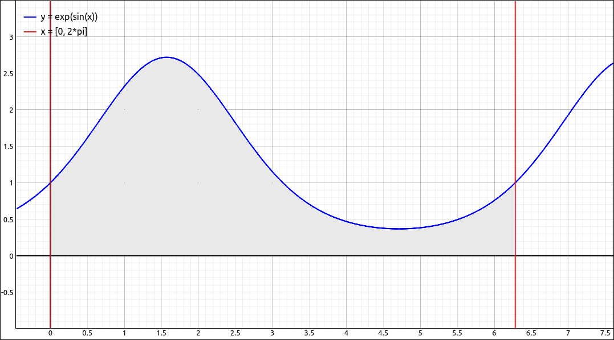
\(f(x) = e^{\sin{\left(x \right)}}\)#
GeoGebra#
Input the function,
e^(sin(x))
Using the midpoint rule with 10000 rectangles gives us an approximation of 7.95493.
To calculate the error we take the second derivative of the function,
If we also turn on the special points for this function we will see,
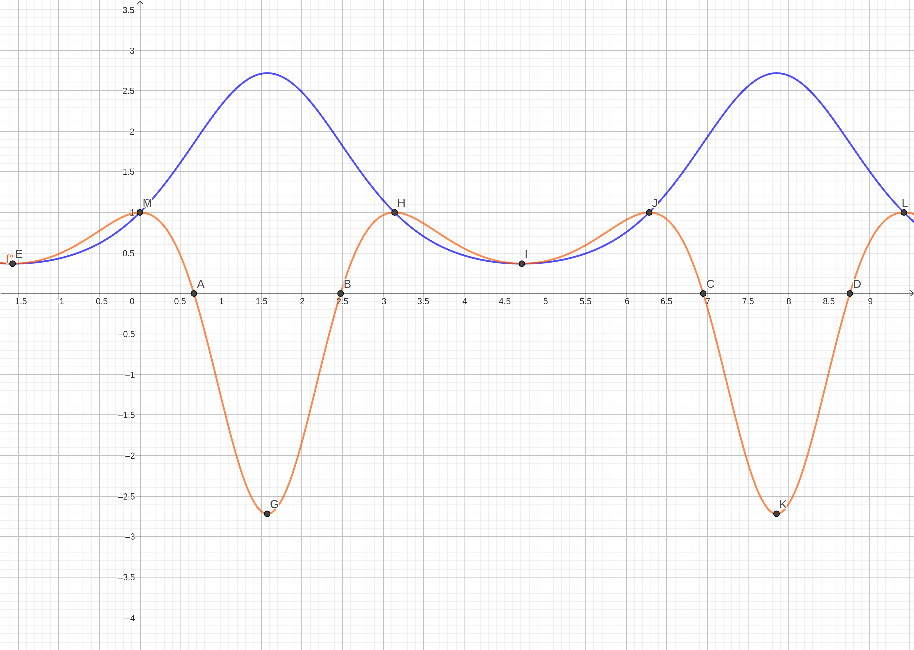
Error Calculation Approximations#
The point G has the largest absolute value of the y value to the point and is (in absolute value) 2.71828 (obviously the value \(e\)). So the error bound using 10,000 rectangles is,
Using the trapezoidal rule with 10,000 trapezoids gives us an approximation of 7.95493. The error bound here is,
CLAE#
Input the function,
e^(sin(x))
Using the midpoint rule with 10,000 rectangles gives us an approximation of 7.954926521012855, and using 1,000,000 rectangles gives, 7.954926521012552.
To calculate the error we take the second derivative of the function,
If we plot this we get,
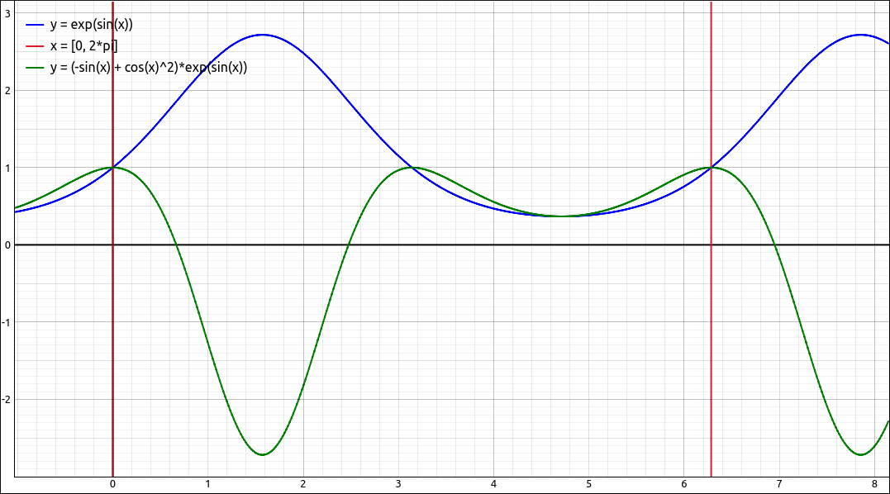
Error Calculation Approximations#
Select the second derivative in the CAS, then select Calculus > Maximums and Minimums, lower bound is 0, upper bound is 2*pi, set Global, Both, and Value (you could do points as well but we only need the values). The result is \(\left[ - e, \ 1\right]\), so the maximum in absolute value is \(e\).
So the error bound using 10,000 rectangles is,
The error bound using 1,000,000 rectangles is,
Using the trapezoidal rule with 10,000 trapezoids gives us an approximation of 7.954926521012854 and with 1,000,000 trapezoids we have 7.954926521013197. The error bound here for 10,000 trapezoids is,
The error bound using 1,000,000 trapezoids is,
Using the Simpson’s rule with 10,000 divisions gives us an approximation of 7.954926521012904 and with 1,000,000 divisions we have 7.954926521013172.
To calculate the error we need to find the maximum of \(|f^{(4)}(x)|\). Calculating the fourth derivative gives,
If we graph this along with the original function we see,
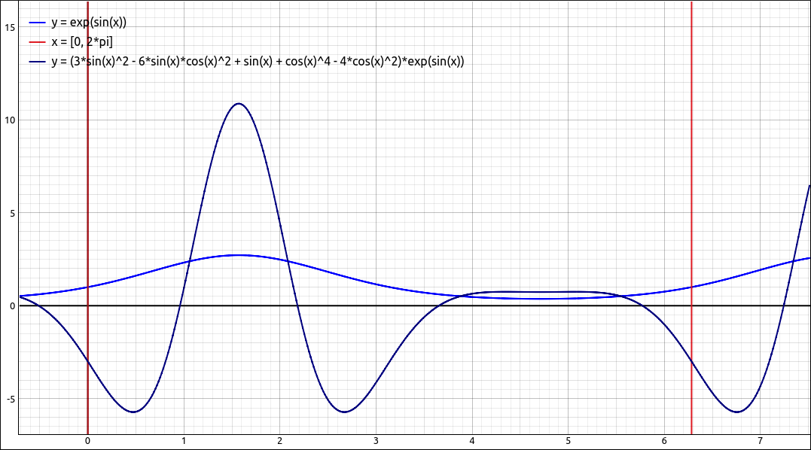
Error Calculation Approximations#
Finding the global maximum and minimum of this function on \([0, 2\pi]\) like we did above will give us a very long and confusing answer, it will also take a while to complete. If we switch the numerics from exact to approximate we will get an approximate solution fairly quickly, \(\left[ -5.72441654067586, \ 10.8731273138362\right]\). So the value for M would be 10.8731273138362. What is commonly done is to pick a nice number that is larger than this but still close to it, for example 11. The error bound here for 10,000 divisions is,
The error bound for 1,000,000 divisions is,
Using the Definite Integral Approximation qwe get the result, 7.95492652101285. Another note about this integral. If we had tried to do the exact integral CLAE would have returned,
Telling us that it could not do it, either the antiderivative was not elementary or CLAE just did not have the ability to solve the problem. If we select this cell and then do Algebra > Approximate we get, 7.95492652101285, which is the same solution as with the numeric approximation above. Another option here would be to select Algebra > Approximate to Precision and then ask for 100 decimal places,
A bit silly but we can do it nonetheless.
Maxima#
Input the function,
f(x):=%e^(sin(x))
Using the midpoint rule with 10,000 rectangles
mid_sum(f, 0, 2*%pi, 10000);
gives us an approximation of 7.954926521012922. To calculate the error we take the second derivative of the function,
If we plot this we get,
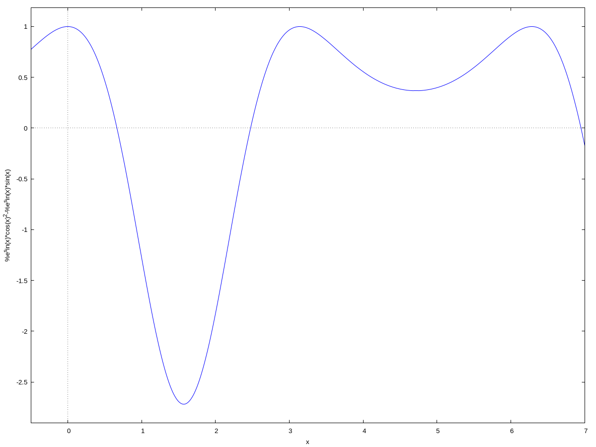
Error Calculation Approximations#
We could find critical numbers of this and then evaluate to get exact answers but from the graph we could simply take the value of M to be 3. So the error bound using 10,000 rectangles is,
Using the trapezoidal rule with 10,000 trapezoids
trap_sum(f, 0, 2*%pi, 10000);
gives us an approximation of 7.954926521012889. The error here would be,
Using Simpson’s rule with 10,000 divisions
simp_sum(f, 0, 2*%pi, 10000);
gives us an approximation of 7.954926521012895. Taking the fourth derivative and graphing it shows,
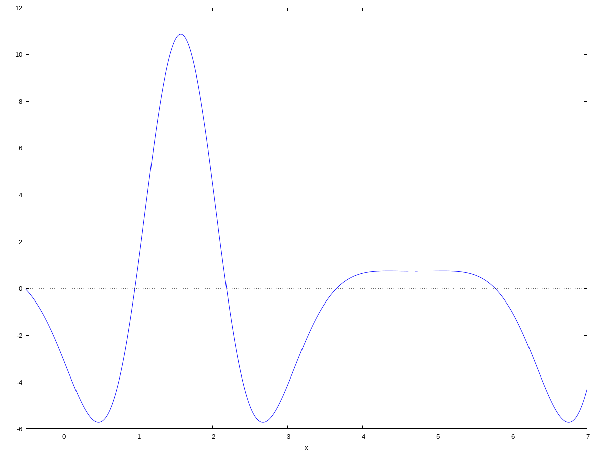
Error Calculation Approximations#
We would make a guess of 11 for M and the error bound would be,
As a final calculation we will use the built-in functions,
quad_qags(f(x), x, 0, 2*%pi);
returns
and
romberg(f(x), x, 0, 2*%pi);
returns 7.954926586085666.